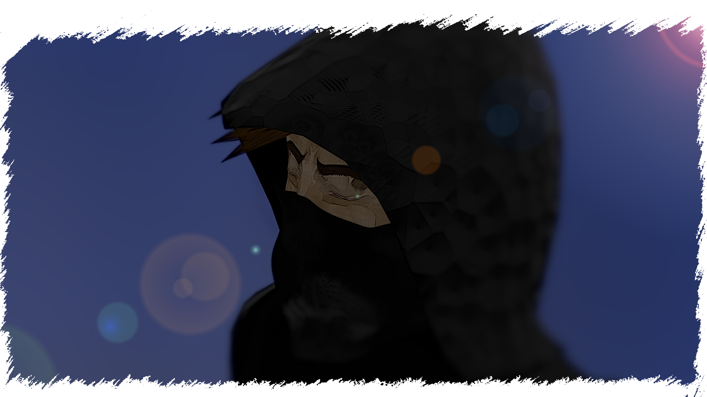
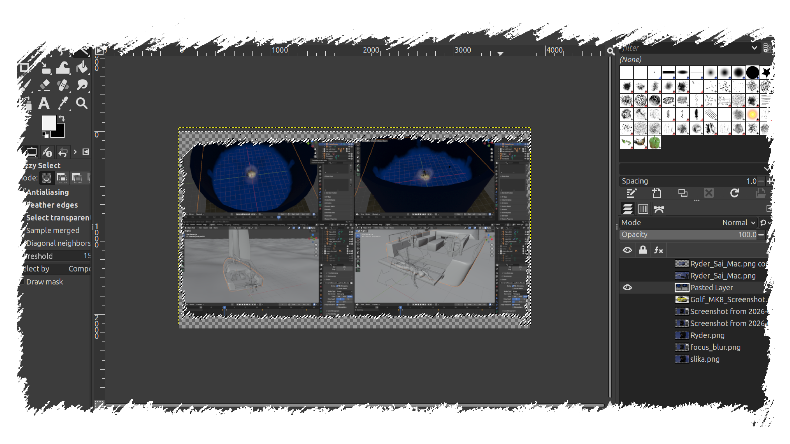

Dobrodošli na moju stranicu projekta za predmet Multimedijalnih Sustava!
Ovo je glavna stranica projekta na kojoj ću proći i u kratko predstaviti sve multimedije u njihovom završnom stanju, korištene u ovome projektu.
Na lijevoj strani se nalazi sidebar s ikonama koje vode do stranica s detaljnijim opisima izrade multimedija i nekoliko primjera njihovih sirovih, tj. početnih, stanja za ovaj projekt.
Krenimo na veličanstveno putovanje kroz multimediju.
Naše putovanje ćemo započeti s videom, koji je kombinacija većine dostupnih multimedija i više manje daje kratak pogled u svijet u koji ćemo zaroniti danas.
VIDEO
Ovaj video je rezultat Blender rendera od jednog osobnog projekta na kojem sam radila prije nekoliko mjeseci i prikazuje jednog lika kojeg sam kompletno modelirala i animirala u Blenderu, a teksturu njegovog lica i teksturu drški od njegova dva oružja sam napravila u Kriti. Također sve prikazano u videu je moj rad i moja kreacija.
SLIKA
Za obradu slike odlučila sam koristiti jedan od kadrova prisutnih u videu, a program korišten kako bi se postigao ovaj rezultat je GIMP (uz laganu pomoć Kritinih kistova za napraviti "poderani" obrub oko slike, ali o tome pri kraju ove stranice).

ZVUK
Audacity je savršen program za obradu zvuka, tako da je sljedeći audio snimak ambijenta u potpunosti obrađen u tom programu.
GRAFIKA
Za grafiku odlučila sam pretvoriti sliku koja je u rasterskoj grafici u vektorsku grafiku, te kao tematiku uokviriti je u oblik poštanske marke. Uvijek me zanimalo kako bi izgledalo pretvoriti rastersku sliku u vektorsku, te tako moči uvećati u nedogled bez gubitka kvalitete. Za taj eksperiment odlučila sam koristiti sliku prednjeg dijela Volskwagen Golfa MK8. To je također rezultat jednog projekta kojeg sam započela prije nekoliko mjeseci i završila u sklopu ovog projekta.
")
TEKST
S Canvom sam se tu i tamo družila u srednjoj školi za brzo i jednostavnu uređivanje grafičkih elemenata, pa je bilo red da ju iskoristim i u ovom projektu za izradu novinskog članka.

OBRUB
Za efekt "poderanog" obruba oko slika prvo sam u Kriti napravila s jednim kistom, a za sve ostale sam napravila selection praznog "poderanog" prostora i taj prostor izbrisala s nove slike.
